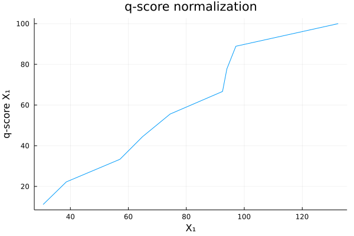
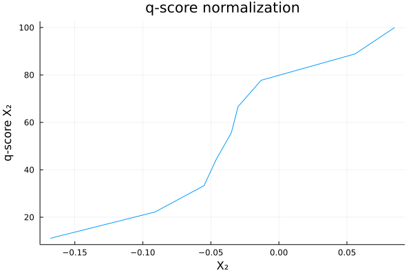
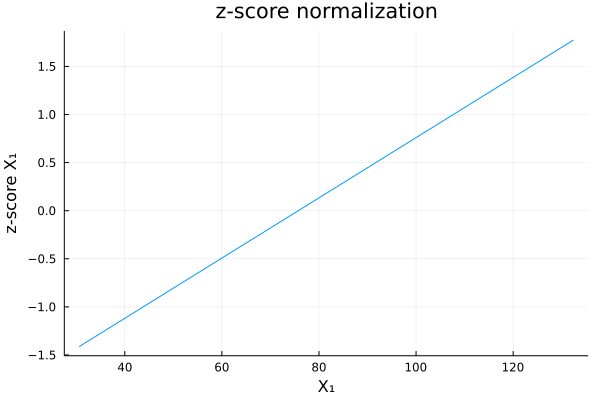
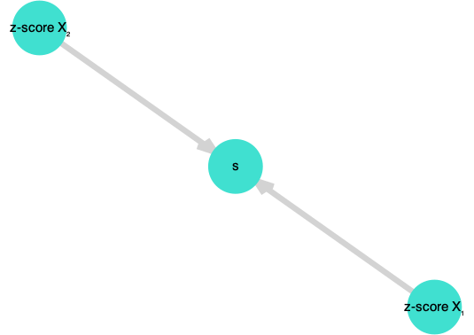

Scoring System
- Most of ESG scoring systems are based on scoring trees.
- Raw data are normalised in order to obtain features $X_1,...,X_m$
- Features $X_1,...,X_m$ are aggregated to obtain sub-scores $s_1,...,s_n$:
\[s_i = \sum_{j=1}^m \omega_{i,j}^{(1)}X_j\]
- Sub-scores $s_1,...,s_n$ are aggregated to obtain the final score $s$:
\[s_i = \sum_{i=1}^n \omega_i^{(2)}s_i\]
This two-level structure can be extended to multi-level tree structures.
Let's implement the first stage of our scoring system.
First, we create a struct Variable, with two examples variables:
Base.@kwdef mutable struct Variable
X::Vector{Float64}
name::String
end
X₁ = Variable(X = [94.0, 38.6, 30.6, 74.4, 97.1, 57.1, 132.4, 92.5, 64.9], name = "X₁")
X₂ = Variable(X = [-0.03, -0.0550, 0.056, -0.013, -0.168, -0.035, 0.0850, -0.0910, -0.0460], name = "X₂")Let's also extend the functionality of PrettyTables.jl to support our new Variable struct:
using PrettyTables
function PrettyTables.pretty_table(X::Vector{Variable})
x = reduce(hcat,[X[i].X for i in eachindex(X)])
X_names = reduce(vcat,[X[i].name for i in eachindex(X)])
return pretty_table(x, header = X_names)
end
pretty_table([X₁, X₂])This prints a nice table in the REPL:
┌───────┬────────┐
│ X₁ │ X₂ │
├───────┼────────┤
│ 30.6 │ -0.168 │
│ 38.6 │ -0.091 │
│ 57.1 │ -0.055 │
│ 64.9 │ -0.046 │
│ 74.4 │ -0.035 │
│ 92.5 │ -0.03 │
│ 94.0 │ -0.013 │
│ 97.1 │ 0.056 │
│ 132.4 │ 0.085 │
└───────┴────────┘Now, the question is: how can we aggregate $X_1$ and $X_2$ to create a synthetic score?
We need to normalize the features $X_1, ..., X_n$!
Normalizing Scores
Once raw data have been normalized in order to facilitate the comparison (ie. absolute carbon emissions amount transformed to carbon intensity for example), resulting features $X_1, ..., X_m$ need to be normalized to facilitate the aggregation process.
Several normalization approches exist:
- q-score normalization:
- 0-1 normalization: $q_i \in [0,1]$
- 0-10 normalization: $q_i \in [0,10]$
- 0-100 normalization: $q_i \in [0,100]$
\[q_i = \hat F(x_i)\]
Where $\hat F$ is the empirical probability distribution.
- z-score normalization:
\[z_i = \frac{x_i - \hat\mu(X)}{\hat\sigma(X)}\]
To do so, let's implement a Score struct and a ScoringSystem struct.
Base.@kwdef mutable struct Score
S::Vector{Float64}} # resulting score
name::String
end
using Graphs # import for the directed graph
using GraphPlot # import for the directed graph
import Cairo, Fontconfig # import for the directed graph
Base.@kwdef mutable struct ScoringSystem
X::Vector{Variable}
S::Union{Nothing, Vector{Score}} = nothing # the vector of subscores
ω::Union{Nothing, Vector{Float64}} = nothing # the vector of weights
graph::Union{Nothing,SimpleDiGraph} = nothing # directed graph representing the scoring tree
score::Union{Nothing,Score} = nothing # the vector of aggregated score
end
our_scoring = ScoringSystem(X = [X₁,X₂])The purpose of the struct Score is to facilitate the interface between our Variable, our future functions for normalization, and the result (the Score). The purpose of the ScoringSystem struct is to regroup / organize our little scoring system.
q-score
Let $x_1, .., x_n$ be the sample. We have:
\[q_i = \hat{F}(x_i) = Pr(X \leq x_i) = \frac{\#(x_j \leq x_i)}{n_q}\]
We can use two normalization factors:
\[n_q = n\]
\[n_q = n + 1\]
Let's implement this in Julia:
using Plots # to print the ecdf
function q_score(X::Variable; scale = 100, get_plot = true)::Score
# the number of observations
n = length(X.X)
# we normalize the number of observations less or equal to each observation by n + 1 (the second normalization factor)
q = [length(filter(x -> x <= i, X.X))/(n+1) for i in X.X] .* scale
s = Score(S = q, name = string("q-score ",X.name))
# we print the ecdf of the variable to get a sense of q-score normalization
if get_plot
display(plot(sort(X.X), (1:n)./n * 100,
xlabel = X.name, ylabel = s.name,
title = "q-score normalization", label = ""))
end
return s
end
# just the vector version of the function
function q_score(X::Vector{Variable}; scale = 100, get_plot = true)::Vector{Score}
s = []
for i in eachindex(X)
push!(s, q_score(X[i]; scale, get_plot))
end
return s
end
# and finally the version applied to our scoring system
function q_score!(s::ScoringSystem; scale = 100, get_plot = true)::ScoringSystem
s.S = q_score(s.X; scale, get_plot)
return s
end
q_score!(our_scoring)The resulting scoring functions looks like the graphs below:  
Now let's again extend the PrettyTables.jl functionality to be applied on our ScoringSystem:
function PrettyTables.pretty_table(s::ScoringSystem)
X = reduce(hcat,[s.X[i].X for i in eachindex(s.X)])
S = reduce(hcat,[s.S[i].S for i in eachindex(s.S)])
X_names = reduce(vcat,[s.X[i].name for i in eachindex(s.X)])
S_names = reduce(vcat,[s.S[i].name for i in eachindex(s.S)])
return pretty_table(hcat(X,S), header = vcat(X_names, S_names))
end
pretty_table(our_scoring)We get the following table:
┌───────┬────────┬────────────┬────────────┐
│ X₁ │ X₂ │ q-score X₁ │ q-score X₂ │
├───────┼────────┼────────────┼────────────┤
│ 94.0 │ -0.03 │ 70.0 │ 60.0 │
│ 38.6 │ -0.055 │ 20.0 │ 30.0 │
│ 30.6 │ 0.056 │ 10.0 │ 80.0 │
│ 74.4 │ -0.013 │ 50.0 │ 70.0 │
│ 97.1 │ -0.168 │ 80.0 │ 10.0 │
│ 57.1 │ -0.035 │ 30.0 │ 50.0 │
│ 132.4 │ 0.085 │ 90.0 │ 90.0 │
│ 92.5 │ -0.091 │ 60.0 │ 20.0 │
│ 64.9 │ -0.046 │ 40.0 │ 40.0 │
└───────┴────────┴────────────┴────────────┘z-score
Another normalization method can be the $z$-score:
using Statistics # to load the mean and std functions
# z-score normalization for a unique variable
function z_score(X::Variable; get_plot = true)::Score
μ = mean(X.X)
σ = std(X.X)
z = [(i - μ) / σ for i in X.X]
s = Score(S = z, name = string("z-score ",X.name))
if get_plot
display(plot(sort(X.X), sort(s.S),
xlabel = X.name, ylabel = s.name,
title = "z-score normalization", label = ""))
end
return s
end
# vector version
function z_score(X::Vector{Variable}; get_plot = true)::Vector{Score}
s = []
for i in eachindex(X)
push!(s, z_score(X[i]; get_plot))
end
return s
end
# version to be applied to our scoring system
function z_score!(s::ScoringSystem; get_plot = true)::ScoringSystem
s.S = z_score(s.X; get_plot)
return s
end
z_score!(our_scoring)
┌───────┬────────┬────────────┬────────────┐
│ X₁ │ X₂ │ z-score X₁ │ z-score X₂ │
├───────┼────────┼────────────┼────────────┤
│ 94.0 │ -0.03 │ 0.571788 │ 0.0402241 │
│ 38.6 │ -0.055 │ -1.16236 │ -0.294977 │
│ 30.6 │ 0.056 │ -1.41277 │ 1.19331 │
│ 74.4 │ -0.013 │ -0.0417363 │ 0.268161 │
│ 97.1 │ -0.168 │ 0.668825 │ -1.81008 │
│ 57.1 │ -0.035 │ -0.583265 │ -0.0268161 │
│ 132.4 │ 0.085 │ 1.77379 │ 1.58215 │
│ 92.5 │ -0.091 │ 0.524834 │ -0.777666 │
│ 64.9 │ -0.046 │ -0.339108 │ -0.174304 │
└───────┴────────┴────────────┴────────────┘Scoring Tree
As mentioned previously, most ESG scoring systems are based on scoring trees. Our example is a simple two-level tree structure. Let's represent it with a directed graph:
function get_scoring_tree!(s::ScoringSystem)::ScoringSystem
n = length(s.S) # number of subscores
G = Graphs.SimpleDiGraph(n+1) # we add + 1 to n because we need to take into account the score (aggregated)
for i in 2:n+1
add_edge!(G,i, 1)
end
# plot the graph
nodelabel = vcat(["s"],[s.S[i].name for i in eachindex(s.S)])
display(gplot(G, nodelabel = nodelabel))
s.graph = G
return s
end
get_scoring_tree!(our_scoring)
Finally, let's compute the aggregated score with $\omega_1 = 0.3$ and $\omega_2 = 0.7$:
function get_aggregate_score!(s::ScoringSystem)::ScoringSystem
# just the weighted sum
s.score = Score(S = sum([s.S[i].S * s.ω[i] for i in eachindex(s.ω)]),
name = "Aggregate score")
# will print the result in table format
pretty_table(s.score.S, header = [s.score.name])
return s
end
our_scoring.ω = [0.3, 0.7] # our weights vector
get_aggregate_score!(our_scoring)┌─────────────────┐
│ Aggregate score │
├─────────────────┤
│ 0.199693 │
│ -0.555191 │
│ 0.411488 │
│ 0.175192 │
│ -1.06641 │
│ -0.193751 │
│ 1.63964 │
│ -0.386916 │
│ -0.223745 │
└─────────────────┘